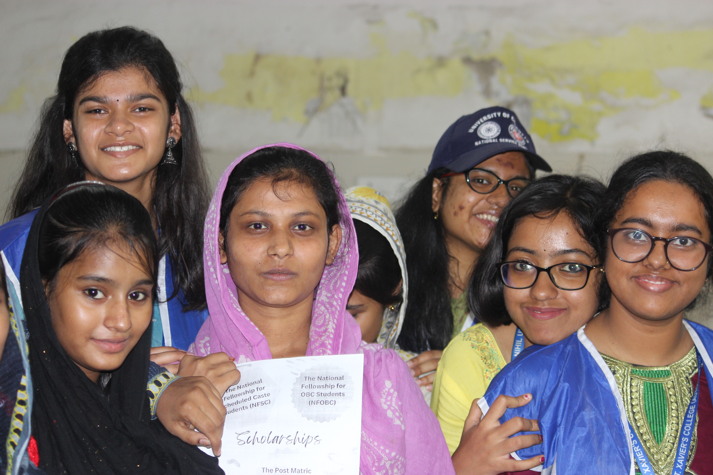
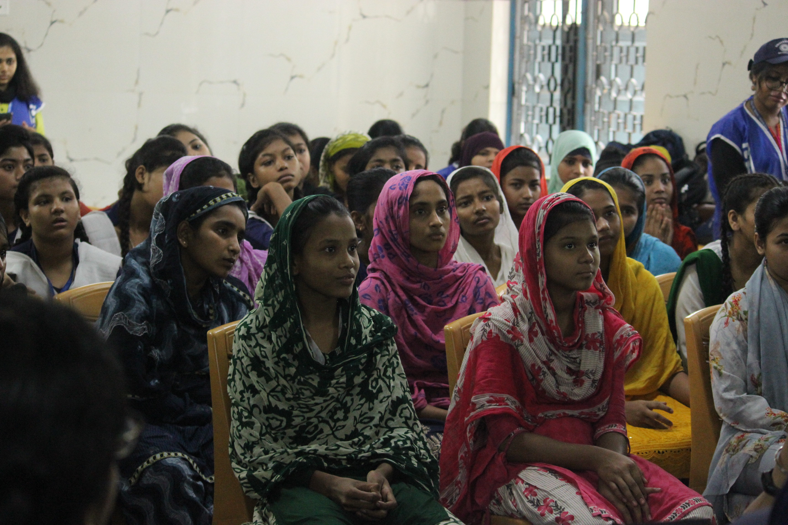
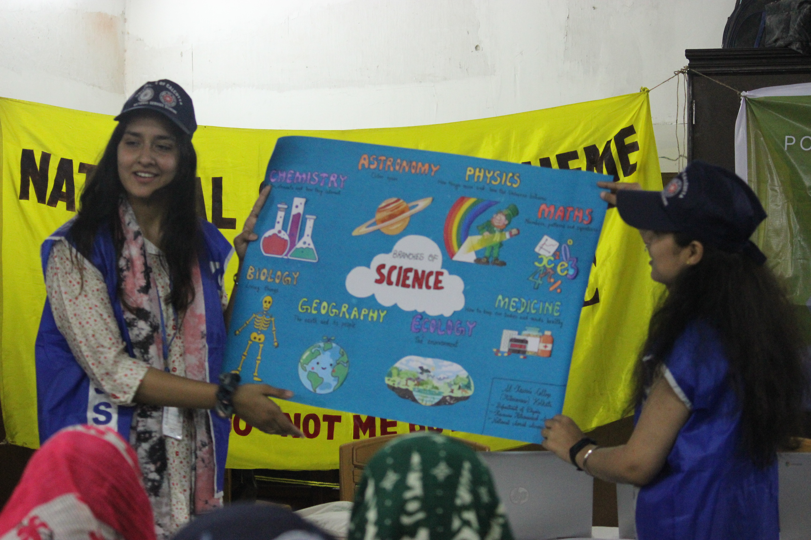

On 25th March 2023, the women of the Xaverian Astronomical Society (XAS), in collaboration with the Postgraduate and Research Department of Physics, organised a science-cum-astronomy awareness session titled “Aiming for the Stars” under the guidance of the National Service Scheme (NSS). Held at the Calcutta Muslim Orphanage, Ripon Street, the initiative aimed to dispel the fear associated with science and encourage scientific curiosity among young girls.

Prior to the visit, the team prepared educational charts highlighting women in science. During the introductory session, students from Classes VIII to X shared their aspirations, with very few considering science as a future option. Through stories of scientists like Kalpana Chawla and Anandibai Gopalrao Joshi, the volunteers emphasised perseverance, representation, and the accessibility of science as a career path.

The session progressed into smaller group interactions where students explored topics such as the phases of the Moon, Venus’ occultation, and the life of Marie Curie through presentations prepared on laptops. The programme concluded with student reflections and the distribution of scholarship information leaflets, leaving both participants and volunteers inspired by the shared learning experience.
